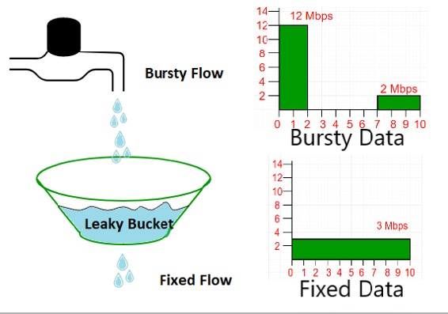
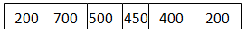
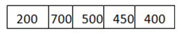
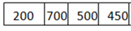

In the network layer, before the network can make Quality of service guarantees, it must know what traffic is being guaranteed. One of the main causes of congestion is that traffic is often bursty.
To understand this concept first we have to know little about traffic shaping. Traffic Shaping is a mechanism to control the amount and the rate of the traffic sent to the network. Approach of congestion management is called Traffic shaping. Traffic shaping helps to regulate rate of data transmission and reduces congestion.
There are 2 types of traffic shaping algorithms:
- Leaky Bucket
- Token Bucket
Suppose we have a bucket in which we are pouring water in a random order but we have to get water in a fixed rate, for this we will make a hole at the bottom of the bucket. It will ensure that water coming out is in a some fixed rate, and also if bucket will full we will stop pouring in it.
The input rate can vary, but the output rate remains constant. Similarly, in networking, a technique called leaky bucket can smooth out bursty traffic. Bursty chunks are stored in the bucket and sent out at an average rate.

In the figure, we assume that the network has committed a bandwidth of 3 Mbps for a host. The use of the leaky bucket shapes the input traffic to make it conform to this commitment. In Figure the host sends a burst of data at a rate of 12 Mbps for 2 s, for a total of 24 Mbits of data. The host is silent for 5 s and then sends data at a rate of 2 Mbps for 3 s, for a total of 6 Mbits of data. In all, the host has sent 30 Mbits of data in 10 s. The leaky bucket smooths the traffic by sending out data at a rate of 3 Mbps during the same 10 s.
Without the leaky bucket, the beginning burst may have hurt the network by consuming more bandwidth than is set aside for this host. We can also see that the leaky bucket may prevent congestion.
A simple leaky bucket algorithm can be implemented using FIFO queue. A FIFO queue holds the packets. If the traffic consists of fixed-size packets (e.g., cells in ATM networks), the process removes a fixed number of packets from the queue at each tick of the clock. If the traffic consists of variable-length packets, the fixed output rate must be based on the number of bytes or bits.
The following is an algorithm for variable-length packets:
- Initialize a counter to n at the tick of the clock.
- If n is greater than the size of the packet, send the packet and decrement the counter by the packet size. Repeat this step until n is smaller than the packet size.
- Reset the counter and go to step 1.
Example – Let n=1000
Packet=
Since n> front of Queue i.e. n>200
Therefore, n=1000-200=800
Packet size of 200 is sent to the network.

Now Again n>front of the queue i.e. n > 400
Therefore, n=800-400=400
Packet size of 400 is sent to the network.

Since n< front of queue
Therefore, the procedure is stop.
Initialize n=1000 on another tick of clock.
This procedure is repeated until all the packets are sent to the network.
{kind=link}
{kind=link}
{kind=link}
Difference between Leaky and Token buckets –
| Leaky Bucket | Token Bucket |
|---|---|
| When the host has to send a packet , packet is thrown in bucket. | In this leaky bucket holds tokens generated at regular intervals of time. |
| Bucket leaks at constant rate | Bucket has maximum capacity. |
| Bursty traffic is converted into uniform traffic by leaky bucket. | If there is a ready packet , a token is removed from Bucket and packet is send. |
| In practice bucket is a finite queue outputs at finite rate | If there is a no token in bucket, packet can not be send. |
Some advantage of token Bucket over leaky bucket –
- If bucket is full in token Bucket , token are discard not packets. While in leaky bucket, packets are discarded.
- Token Bucket can send Large bursts can faster rate while leaky bucket always sends packets at constant rate.